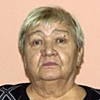
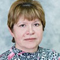
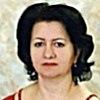

Дошкольное отделение гимназии № 1274
В 2015 году 48% первоклассников Гимназии № 1274 пришли из дошкольного отделения.
- Дубровский проезд, 7
- Велозаводская улица, 9
- 1-я улица Машиностроения, 2/7к2
- 2-я улица Машиностроения, 5
- Сосинская улица, 4
- Шарикоподшипниковская улица, 30Ак2
Воспитатели
Воспитатели, которых чаще всего благодарят родители (отзывы и профили сотрудников взяты с официального сайта школы):|
Воспитатель
Чеснокова Галина Юрьевна
7 благодарностей |
Воспитатель
Мазаева Галина Алексеевна
6 благодарностей |
Муз. рук.
Киселев Александр Федорович
3 благодарности |
Воспитатель
Звягина Елена Владимировна
2 благодарности |
|
Воспитатель
Половинцева Елена Юрьевна
2 благодарности |
Физ. рук.
Поспелова Ирина Геннадьевна
2 благодарности |
Воспитатель
Крыкова Светлана Ивановна
1 благодарность |
Дефектолог
Шаронова Ирина Константиновна
1 благодарность |
|
Воспитатель
Евсенина Лариса Владимировна
1 благодарность |

Воспитатель
Тришина Людмила Петровна
1 благодарность |

Воспитатель
Хитрова Наталья Алексеевна
1 благодарность |

Методист
Автандилян Маргарита Рафаэловна
1 благодарность |
 Логопед
Умнягина Александра Евгеньевна
Логопед
Умнягина Александра Евгеньевна
1 благодарность |
Отзывы
Данные собраны c официального сайта школы и через форму для отзывов.
Выражаем огромную благодарность директору ДОУ "Солнышко" Крючковой Наталии Николаевне, нашим любимым воспитателям Половинцевой Елене Юрьевне и Звягиной Елене Владимировне, а также муз. руководителю Киселеву Александру Федоровичу за прекрасно организованный выпускной вечер для наших детей! Это был, действительно, настоящий праздник! Также хотелось бы отдельно отметить высокий профессионализм воспитателей, отличную организацию занятий и заботливое отношение к интересам каждого ребенка. Мой абсолютно "несадовский ребенок" к Елене Юрьевне и Елене Владимировне бежит вприпрыжку, особенно по пятницам на "Клубный час"- отличная инновационнная идея! С уважением, семья Пичуриных.
Доброго дня!
От имени родителей, чьи дети посещают 4-ю группу ДОУ «Солнышко», хочу выразить огромную благодарность педагогическому составу детского сада, особенно воспитателям наших детей Чесноковой Галине Юрьевне, Мазаевой Галине Алексеевне, няне Галкиной Лидии Алексеевне, а также музыкальному работнику Александру Фёдоровичу!
Всегда приветливы, терпеливы, проводят много интересных занятий с детьми. Учат их не только лепить, рисовать, вырезать, но и познавать окружающий мир, уважать друг друга, фантазировать, ценить прекрасное, быть честными и добрыми. В группе всегда царит теплая атмосфера, все чисто, дети опрятные и заняты увлекательным делом. А какие они организуют праздники! Это настоящая актерская подготовка! Дети не просто поют и танцуют, но и узнают что-то новое. Делают как для детишек, так и для родителей массу приятных сюрпризов! Привлекают родителей для выступления, а также выступают сами, подавая пример нашим детям!
Также хочется подчеркнуть огромную работу нашего руководителя Крючковой Натальи Николаевны. Все организовано на высшем уровне! Созданы все условия для развития детей, везде порядок и чистота. Постоянно организовываются и проводятся интересные конкурсы, праздники, спортивные и развивающие мероприятия. И всегда мы видим, как она принимает активное участие в жизни детского сада.
Особо хочется отметить внедрение в жизнь детей «Клубного часа», который проходит каждую пятницу в нашем саду. 20 мая был организован открытый клубный час, в котором некоторые родители смогли принять непосредственное участие. Это очень интересное мероприятие! Дети просто в восторге от этого часа, и каждую пятницу утром бегут в детский сад, дабы не пропустить этого урока! В саду организовано несколько клубов по интересам, где ребенок может рисовать, танцевать, заниматься спортом, творчеством, лепкой или играть в развивающие игры. Дети в течение часа самостоятельно выбирают занятие, но при этом они должны соблюдать определенные правила. На открытом уроке мы убедились в том, что все проходит организованно и безопасно для детей. Но в тоже время очень увлекательно, и помогает развиваться, и социализироваться нашим детям! Спасибо за организацию в этот день мастер класса для родителей, где педагог показала нам несколько простых техник рисования, которыми мы можем воспользоваться и порисовать с детьми дома. По окончанию часа наши воспитатели обсуждают с детьми, кто и как провёл клубный час, тем самым помогают им учиться высказывать свое мнение, слушать друг друга, а также планировать следующие занятие.
Огромное вам «Спасибо» за полную самоотдачу в вашем нелегком труде!
Родители 4-й группы ДОУ «Солнышко»
От имени родителей, чьи дети посещают 4-ю группу ДОУ «Солнышко», хочу выразить огромную благодарность педагогическому составу детского сада, особенно воспитателям наших детей Чесноковой Галине Юрьевне, Мазаевой Галине Алексеевне, няне Галкиной Лидии Алексеевне, а также музыкальному работнику Александру Фёдоровичу!
Всегда приветливы, терпеливы, проводят много интересных занятий с детьми. Учат их не только лепить, рисовать, вырезать, но и познавать окружающий мир, уважать друг друга, фантазировать, ценить прекрасное, быть честными и добрыми. В группе всегда царит теплая атмосфера, все чисто, дети опрятные и заняты увлекательным делом. А какие они организуют праздники! Это настоящая актерская подготовка! Дети не просто поют и танцуют, но и узнают что-то новое. Делают как для детишек, так и для родителей массу приятных сюрпризов! Привлекают родителей для выступления, а также выступают сами, подавая пример нашим детям!
Также хочется подчеркнуть огромную работу нашего руководителя Крючковой Натальи Николаевны. Все организовано на высшем уровне! Созданы все условия для развития детей, везде порядок и чистота. Постоянно организовываются и проводятся интересные конкурсы, праздники, спортивные и развивающие мероприятия. И всегда мы видим, как она принимает активное участие в жизни детского сада.
Особо хочется отметить внедрение в жизнь детей «Клубного часа», который проходит каждую пятницу в нашем саду. 20 мая был организован открытый клубный час, в котором некоторые родители смогли принять непосредственное участие. Это очень интересное мероприятие! Дети просто в восторге от этого часа, и каждую пятницу утром бегут в детский сад, дабы не пропустить этого урока! В саду организовано несколько клубов по интересам, где ребенок может рисовать, танцевать, заниматься спортом, творчеством, лепкой или играть в развивающие игры. Дети в течение часа самостоятельно выбирают занятие, но при этом они должны соблюдать определенные правила. На открытом уроке мы убедились в том, что все проходит организованно и безопасно для детей. Но в тоже время очень увлекательно, и помогает развиваться, и социализироваться нашим детям! Спасибо за организацию в этот день мастер класса для родителей, где педагог показала нам несколько простых техник рисования, которыми мы можем воспользоваться и порисовать с детьми дома. По окончанию часа наши воспитатели обсуждают с детьми, кто и как провёл клубный час, тем самым помогают им учиться высказывать свое мнение, слушать друг друга, а также планировать следующие занятие.
Огромное вам «Спасибо» за полную самоотдачу в вашем нелегком труде!
Родители 4-й группы ДОУ «Солнышко»
Всем здравствуйте!Хотелось бы рассказать о замечательном ДОУ "Солнышко",входящем в наш комплекс,где работают замечательные,талантливейшие педагоги и царит неповторимо добрая и уютная атмосфера - "как дома".Этот детский сад мы с моими сыновьями ждали.Когда его ещё строили, мы гуляли вокруг и я всё время им рассказывала,что когда детский сад достроят,вы обязательно пойдете именно сюда и вам здесь обязательно очень понравится)Так оно и вышло, моим ребятам очень нравится их детский сад и не только потому,что он новый и хорошо укомплектован новейшими игрушками,оборудованием и проч. Основная составляющая - "душа" сада - это коллектив педагогов и грамотный руководитель,с которыми нам очень повезло. Наша заведующая Крючкова Наталья Николаевна,очень тщательно подбирала не только воспитателей и нянь,но и остальных педагогов и персонал.Она выбрала лучших из лучших!У нас в саду работают талантливые и профессиональные воспитатели, самые добрые и заботливые няни, у наших деток замечательный повар - "тетя Света",которая готовит порой вкуснее мамы))), работают всей душой болеющие за сад и деток завхоз Мария Сергеевна(которая помимо всех своих обязанностей, разбила шикарно цветущие,благоухающие,яркие клумбы перед входом в наш сад),неповторимый и зажигательный музыкальный руководитель - Александр Федорович, всегда обаятельная и доброжелательная тренер по плаванию - Ирина Геннадьевна и многие другие отличные специалисты. Всем вам я очень благодарна. за то,что вы - коллектив.который создает комфортные условия для воспитания,образования и пребывания моих деток в саду. Я с большим удовольствием прихожу в наш сад сама,не только для того,чтобы привести и забрать своих детей,но и бываю на занятиях, открытых мероприятиях и праздниках.Хочу рассказать об одном таком мероприятии,на котором побывала сама недавно - это Клубный час.Он проводится в саду еженедельно по пятницам на протяжении полугода.Клубный час является составляющей инновационной технологии по социализации ребят в образовательном комплексе,а именно в нашем ДО "Солнышко".Наша заведующая Наталья Николаевна,стала инициатором внедрения этой технологии в нашем саду.Детально изучив её и, взвесив все плюсы и минусы, решила,что этой технологии в нашем саду быть)И не прогадала!Все педагоги и специалисты,а также мы - родители,заметили положительные результаты. В день Клубного часа(у нас это пятница), во всем детском саду открывают двери несколько клубов по интересам (дискотека,спортивный, мастерилка, развивайка, лего-дом и др.).Ребята из всех групп могут сами выбирать куда им пойти сегодня,могут немного потанцевать,потом поиграть с развивающими игрушками, далее посоревноваться в спортивном зале,а затем пособирать что-то интересное из Лего) Всё это мероприятие длится 1 час, при этом воспитатели и педагоги находятся рядом с детьми, помогают,организуют деятельность в клубах.Иногда для проведения клубного часа приглашаются родители:художники, преподаватели танцев,мастерицы, которые с удовольствием делятся своими умениями с детками. Безопасность передвижений детей по зданию обеспечивают няни и сотрудники охраны.Ребята знают правила поведения на Клубном часе и не нарушают их,т.к. если нарушат, потеряют жетоны(которые получили на самом первом Клубном часе) и не смогут участвовать в следующем Клубном часе. Детям очень нравится Клубный час. это для них целый час веселой,активной и познавательной деятельности,где они сами решают каким ему быть сегодня,знакомятся с новыми людьми и создают свои новые маленькие "шедевры".Это мероприятие,на мой взгляд,имеет колоссальное значение для развития и социализации наших деток уже сейчас,т.к. в современном мире дети стали менее общительными из-за появления в их жизни виртуальной реальности.Они там,в играх и мультфильмах,а на площадке со сверстниками и другими детьми им уже не так просто и комфортно,как было нам в нашем детстве.Мы легко знакомились, дружили и играли всем двором в подвижные игры.А теперь это уже редкость, детки стали более обособленными,труднее идут на контакт со сверстниками. т.к. их окружают телефоны.планшеты и компьютеры,они рядом и всегда доступны,там проще в виртуальном мире. А на Клубном часе в саду,совершенно не важно из какой ребенок группы,сколько ему лет, где ребята из его группы, где его воспитатель, двери всех клубов открыты для всех. Ребята знакомятся друг с другом, соревнуются. учатся работать в командах, раскрепощаются,танцуют,мастерят и просто очень весело проводят время).По завершению Клубного часа, проводится рефлексивный круг,когда детки в своих группах садятся в круг и рассказывают кто как провел сегодня Клубный час: где был, что сделал,где понравилось больше всего,все ли получилось, что не успел и куда планирует ещё сходить в следующий раз.Значение этого "круга" также очень велико,т.к. детки делятся впечатлениями, а заодно учатся выражать свои мысли, анализировать свои действия, грамотно говорить,слушать своего соседа,а ещё планировать свою деятельность на будущее. Конечно же всё это приносит свои плоды, ребята стали более общительными. стали больше играть в командные игры, стали лучше и больше говорить, стали более раскрепощенными с окружающими людьми. Это всё я лично сама заметила не только на примере своих детей, наблюдаю и за другими детками и группами со стороны(сама имею высшее педагогическое образование,разбираюсь во многих вопросах,люблю наблюдать за детками и брать на заметку себе опыт других педагогов). Разница видна даже со стороны и она огромна,что было до внедрения инновационной технологии и стало после)))За это теплые слова благодарности нашей заведующей - Крючковой Наталье Николаевне! Спасибо,Вам. за грамотную работу и организацию, за то.что не боитесь экспериментировать и всей душой болеете за наш сад!Для тех,кто раздумывает, куда повести своего ребенка, я с уверенностью советую - В НАШ - ДО "Солнышко"!
Добрый день! Хочу выразить огромную благодарность всему педагогическому составу ДОУ Солнышко, в особенности воспитателям 2-й младшей группы: Тришиной Людмиле Петровне, Крыковой Светлане Ивановне и тренеру по плаванию Поспеловой Ирине Геннадьевне . Огромное Вам спасибо за помощь в воспитании моего ребенка, за участие в гармоничном формировании личности, в физическом и всестороннем развитии.. За год мой сын многому научился, это показал открытый урок под названием Клубный час, проходивший 20 мая 2016 года. Все дети дружные, активные, много знают и умеют. Педагоги занимаются с интересом, с душой, передавая все знания и навыки. Также я посетила открытый урок по плаванию, за учебный год мой сын научился не боятся воду, нырять и задерживать дыхание. Еще раз большое спасибо за Ваш труд и любовь к нашим детям! Желаю Вам крепкого здоровья, благополучия и успехов!
Добрый вечер, Антон Альфредович!
Я хотел поблагодарить воспитателей 3 группы ДО Цветик-Семицветик ,
Хитрову Наталью Алексеевну, Евсенину Ларису Владимировну,
а также учителя -логопеда Умнягину Александру Евгеньевну, дефектолога
Шаронову Ирину Константиновну за отличную работу, за профессионализм ,
за терпение и понимание. Хочу сказать большое спасибо Маргарите Рафаэловне,
за её труд ,за ту атмосферу которую она создала в этом замечательном учреждении .
Спасибо всем ! С Уважением Григорян А.А.
Я хотел поблагодарить воспитателей 3 группы ДО Цветик-Семицветик ,
Хитрову Наталью Алексеевну, Евсенину Ларису Владимировну,
а также учителя -логопеда Умнягину Александру Евгеньевну, дефектолога
Шаронову Ирину Константиновну за отличную работу, за профессионализм ,
за терпение и понимание. Хочу сказать большое спасибо Маргарите Рафаэловне,
за её труд ,за ту атмосферу которую она создала в этом замечательном учреждении .
Спасибо всем ! С Уважением Григорян А.А.
Если вы нашли ошибку или неточность, пожалуйста, сообщите нам об этом.
Ученик, выпускник или родитель? Оставьте отзыв о детском саде.